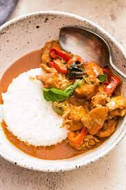

Curry

Panang curry with chicken
Panang refers to the island of Penang in Northern Malaysia bordering southern Thailand.
Ingredients
- 5 tablespoons Panang curry paste
- cooking oil
- 4 cups coconut milk
- 2 tablespoons palm sugar
- 2 tablespoons fish sauce, or to taste
- 6 makrut lime leaves, torn in half
- 2 fresh red chile peppers, sliced
Steps
- Fry the curry paste in the oil in a large skillet or wok over medium heat until fragrant. Stir the coconut milk into the curry paste and bring to a boil. Add the chicken; cook and stir until the chicken is nearly cooked through, 10 to 15 minutes. Stir the palm sugar, fish sauce, and lime leaves into the mixture; simmer together for 5 minutes. Taste and adjust the saltiness by adding more fish sauce if necessary. Garnish with sliced red chile peppers and Thai basil leaves to serve.
Back to top
Back To Main Menu